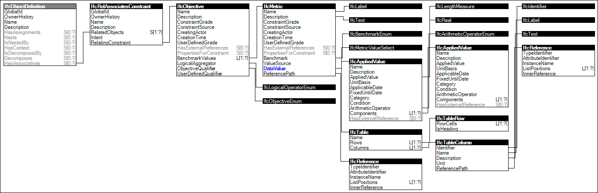

Link to this page
Link to this pageThe concept Constraint Association describes how object or object types may have associated constraints indicating a qualitative objective or a quantitative metric to be met.
Constraints based on metrics are measurable, such that the status of a metric being valid is computer-interpretable. Metric constraints are based on simple conditional logic such as greater than a particular value or included within a specified list or table. Constraints may be combine multiple metrics using boolean logic such as AND, OR, XOR, or NOT.
Figure 21 illustrates an instance diagram.
 |
Figure 21 — Constraint Association |